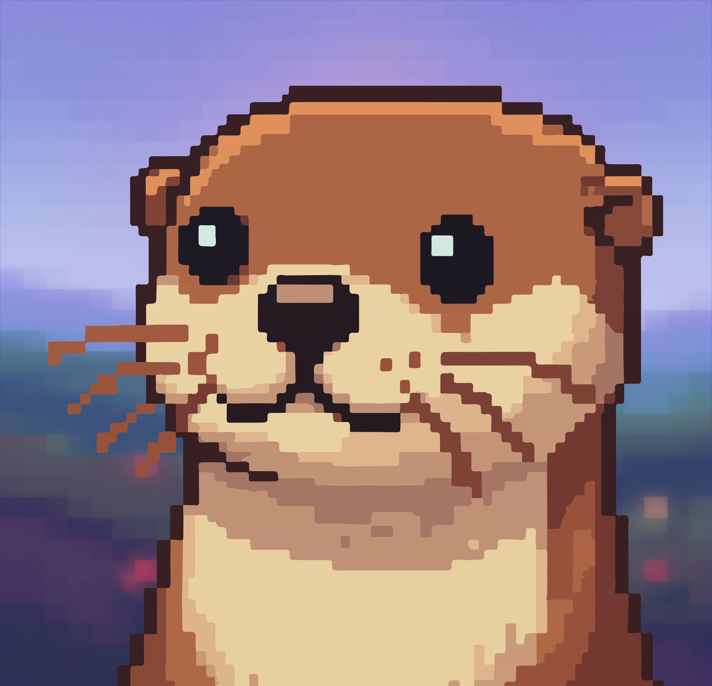

Proyectos reales, conceptos prácticos y el proceso completo — errores incluidos.

Estudiante de software de día, nutria programadora de noche. Noto es mi identidad para documentar el proceso. Aquí comparto esa parte del desarrollo: el caos, los errores y la satisfacción de ver algo funcionar después de fallar mil veces.
La idea es simple: si puedo entenderlo construyéndolo, tú también puedes construir tu propia versión.
contenido
El canal está en construcción. Suscríbete para no perderte las primeras notas.